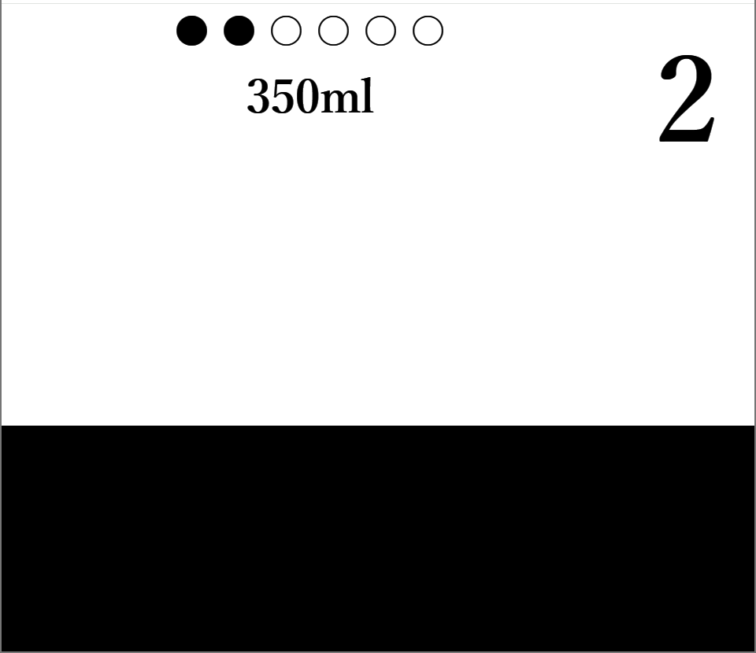

クリックしている間、液体量がどんどん増えていくので、カウントがなくなるころに目標の値に液体量を近づけていくゲームです。 画面いっぱいになった場合の容量は500mlなので、そこからおおよそどこまで貯めればいいかを判断して下さい。 クリックをしていないと液体量がどんどん少なくなってしまったり、注ぎ始めた液体は急には止まらないので注意してください。 ６回成功するか、失敗してゲームオーバーになったら終わります。成功判定は誤差100mlまでです。６回成功するとスコアが表示されるので、高スコアを目指して頑張ってください。
残り時間です。カウントが終わるころに目標値になるべく液体量を近づけるようにしましょう。
黒丸は成功した回数、白丸は残りの回数です。６回成功するか、失敗したら終了になります。
目標の値です。この値に近づけるようにしましょう。成功した場合、カウントがなくなるころに評価が表示されます。GOOD、GREAT、ALMOST PERFECT、PERFECTの４つの評価があります。評価によってボーナススコアが加算されるので、高い評価を目指して頑張ってください。
カウントが０になるころに、この液体の量を目標値にできるだけ近づけましょう。ただし、あふれる（画面いっぱいになる）と失敗になるので気を付けて下さい。
目標値との差が少ないほど高得点がもらえます。10000点を超えを目指して頑張ってください。